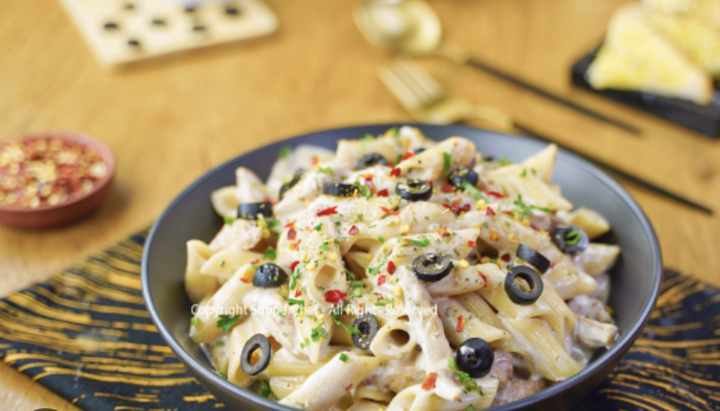

Recipe For White Sauce Pasta

Description About White Sauce Pasta
White Sauce Pasta is a creamy and delicious dish made with a rich, cheesy white sauce. It is packed with flavors from herbs, sautéed vegetables, and perfectly cooked pasta, making it a comforting meal.
Materials Required for White Sauce Pasta:
- 2 cups pasta (penne, fusilli, or macaroni)
- 2 tbsp butter
- 2 tbsp all-purpose flour (maida)
- 2 cups milk
- 1/2 cup grated cheese (mozzarella or processed cheese)
- 1/2 tsp black pepper
- 1/2 tsp oregano
- 1/2 tsp chili flakes
- 1/2 cup boiled sweet corn
- 1/2 cup chopped bell peppers
- 1/4 cup chopped onions
- Salt to taste
Steps to Make White Sauce Pasta:
- Boil the Pasta – Cook the pasta in boiling salted water until al dente. Drain and set aside.
- Prepare the White Sauce – In a pan, melt butter over low heat. Add all-purpose flour and cook for 1-2 minutes until light golden.
- Add Milk – Slowly pour in warm milk while stirring continuously to avoid lumps.
- Add Cheese – Mix in grated cheese and let it melt into the sauce.
- Season the Sauce – Add salt, black pepper, oregano, and chili flakes for seasoning.
- Sauté Vegetables – In another pan, sauté onions, bell peppers, and sweet corn in a little butter.
- Combine Everything – Add the cooked pasta and sautéed vegetables into the white sauce. Mix well.
- Serve Hot – Garnish with extra cheese and herbs, then serve warm!
home